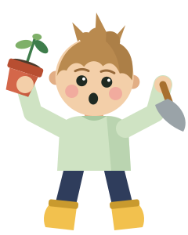

Toko Lestari
Tunas & Hutan Lestari
0%Tunas & Hutan Lestari
Rekor kamu 0 m
Metik benih, tanam pohon.
0 m
0
Si Tunas mantul sendiri. Kamu tinggal arahkan kiri-kanan.
Pakai tombol panah ← → atau geser di layar

Rekor kamu Rekor baru!
Pendakian ini
0 m
Benih terkumpul0
Putar HP-nya ya, biar bisa main.